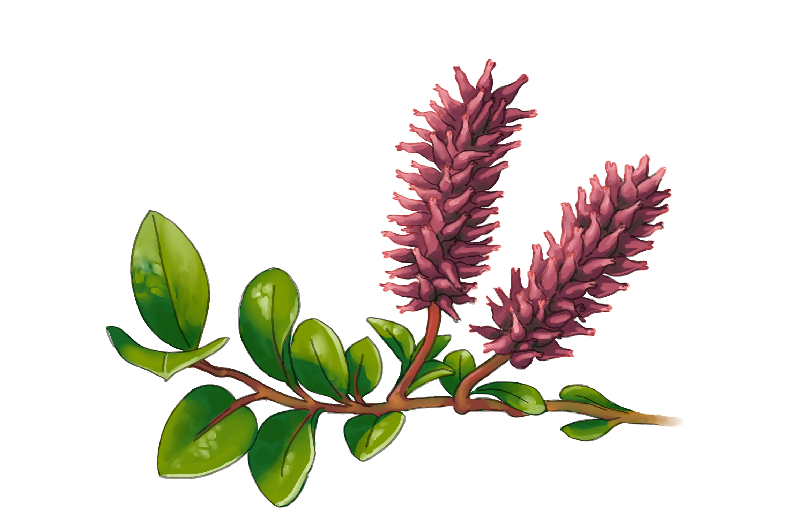
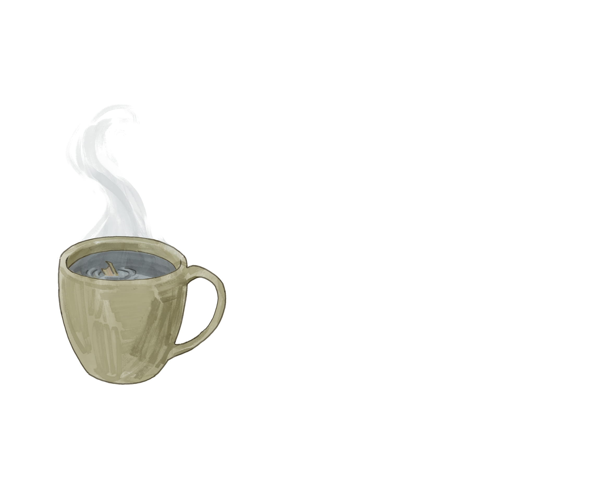
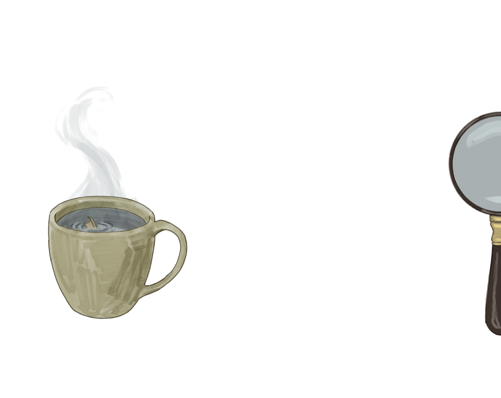
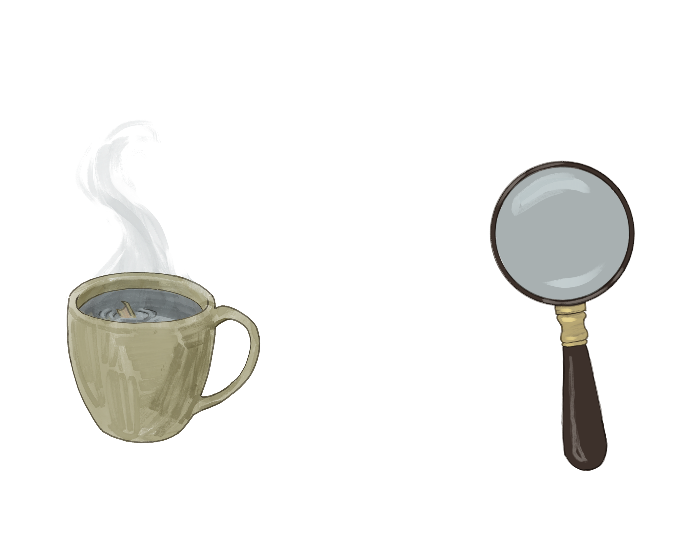
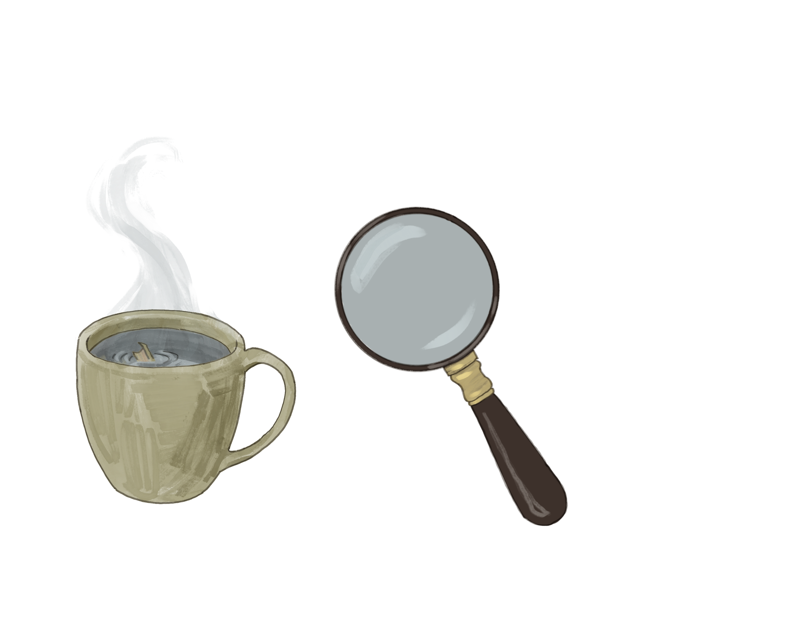
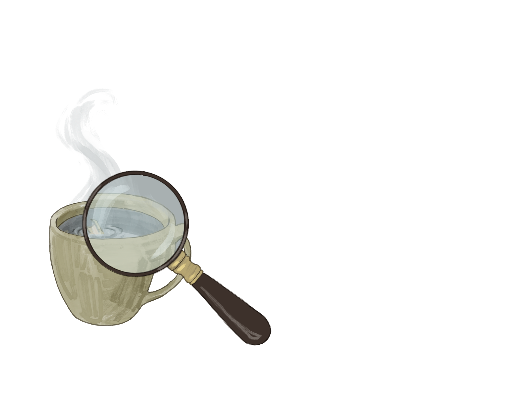

For generations, North American Indigenous communities have used arctic willow to help relieve headaches. By brewing the bark into a tea, people found relief in a way that's incredibly similar to modern-day aspirin.
Arctic willow (Salix arctica) is a small shrub found in and around the Arctic Circle and the alpine regions of the Rocky Mountains.
The plant is known as amaallinaaq in Inuit language and k'aii in Gwichya Gwich'in.
While Arctic willow is the focus here, many types of willow are used by these communities to help relieve pain and treat headaches.

The tea can then be diluted and consumed to help ease headache pain.
Indigenous use of willow bark as a headache treatment has been passed down through generations of oral history.





Willow bark and leaves naturally contain a compound called salicin, which is converted to salicylic acid in the body. Salicylic acid blocks the production of prostaglandins, the compounds that cause painful inflammation during headaches.